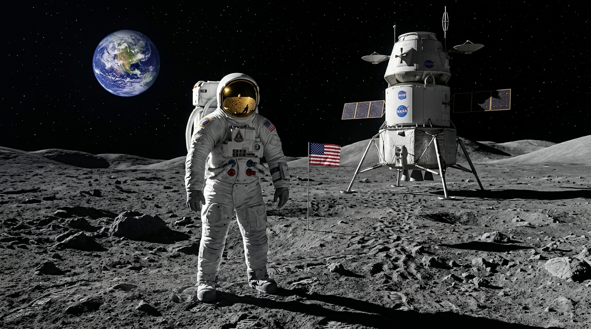

第一段內容深究 · 圖書館讀報
主動探索未知：
主動探索未知：
睽違五十年的太空夢
- 主動查證：作者帶著好奇走進圖書館，從「想像」跨入「科學」。
- 阿提米絲二號：公布登月成員，首度納入女性與非裔太空人。
- 太空加油站：引力只有1/6、無大氣阻力，作為進軍火星的跳板！

阿提米絲計畫 · 全人類平等探索深空的里程碑
🌑 第二段內容深究 · 光影魔術
四十五億歲高齡：古老而靜謐的月球表面。
防護罩大破案：因為沒有水和大氣層保護，每天遭受無數隕石猛烈轟擊，留下永遠無法抹平的坑洞。
陰影的誕生：陽光斜射在坑洞邊緣投下黑影，古人因而看成了「玉兔搗藥」！

科學的隕石撞擊坑 ✕ 文學的玉兔奔月傳說
✈️ 搭乘噴射客機 (900 km/h)
要花半個月 (15天)
🚲 日夜不停騎單車 (15 km/h)
要騎整整 3 年！
🤔 既然月亮距離地球這麼遠……古代的嫦娥，到底是怎樣到月亮的呢？
🔭 科學的「真實與遙遠」
三十八萬公里冰冷深空、無水無氣、滿布隕石坑。
科學揭開了嚴峻的宇宙法則，激發四年級同學探究未知的求真精神！
🌕 文學的「想像與溫暖」
玉兔搗藥的陪伴、嫦娥奔月的純真提問。
文學想像跨越了三十八萬公里的遙遠距離，把月亮溫柔地拉進我們心坎！
帶著好奇心走進圖書館，你讀到了什麼？